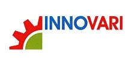

Поставляем оригинальные редукторы и мотор-редукторы Innovari под заказ — оригинал с гарантией производителя. Нужно дешевле — изготовим аналог собственного производства по присоединительным размерам. Цена и срок поставки — по запросу.
Оригинальные мотор-редукторы и редукторы Innovari — под заказ, с гарантией производителя. Пришлите модель или шильд — сообщим цену и срок поставки. Нужно дешевле — изготовим аналог (см. ниже).
| Серия Innovari | Назначение |
|---|---|
| NMRV | червячные мотор-редукторы (типоразмеры 030…090) |
| FA / FC | соосные и плоские цилиндрические |
| VARI | вариаторы |
| Двигатели в сборе | IEC / B14, B5 |
Точные типоразмеры — по каталогу производителя. Цена и наличие оригинала — по запросу. Не оферта.
Заменяем червячные мотор-редукторы Innovari на аналоги собственного производства (серии Ч, 2Ч, МЧ, МЧ2). Узел встаёт на штатное место по присоединительным и габаритным размерам — переходные фланцы и спецвалы изготавливаем по вашим чертежам.

| Заменяем серии Innovari | B, FA, FC, X |
|---|---|
| Мощность двигателя | 0.06–11 кВт |
| Передаточное число | 3.77–6510 |
| Наш аналог | Редукторы серии ZR (червячные, плоские цилиндрические, соосные, конические) |
| Гарантия | 24 месяца |
| Срок | Отгрузка со склада от 3 дней, изготовление от 5 рабочих дней |
Совпадают присоединительные размеры, валы и фланцы — узел встаёт на штатное место.
Вдвое выше среднерыночной.
Отгрузка со склада от 3 дней — не ждать импорт месяцами.
Пришлите фото шильда или модель — подберём аналог за 15 минут.
Подбор по типоразмеру: каждой модели Innovari соответствует наш редуктор серии ZR. Точную замену по вашей модели или шильду подтвердит инженер — пришлите шильд или опишите задачу.
| Модель Innovari | Наш аналог |
|---|---|
| Червячные мотор-редукторы | |
| B030 | ZR 603 |
| B045 | ZR 604 |
| B050 | ZR 605 |
| B063 | ZR 606 |
| B063A | ZR 607 |
| B085 | ZR 609 |
| B110 | ZR 6010 |
| Плоские цилиндрические мотор-редукторы | |
| FA 41, FA 42, FA 43 | ZR 636 |
| FA 52, FA 53, FA 61, FA 62, FA 63 | ZR 646 |
| FC 72, FC 73 | ZR 656, ZR 666 |
| FC 81, FC 82, FC 83 | ZR 676 |
| Соосные мотор-редукторы | |
| 402A, 403A | ZR 939 |
| 452A, 502A, 503A, 501C, 502C, 503C, | ZR 949 |
| 602A, 603A, 701C, 702C, 703C | ZR 959, ZR 969 |
| 801C, 802C, 803C, | ZR 979 |
| 851C, 852C, 853C, | ZR 989 |
| 901C, 902C, 903C, | ZR 999 |
| Конические мотор-редукторы | |
| X52A, X53A, | ZR 838 |
| X62A, X63A | ZR 848 |
| 113C, 114C | ZR 858, ZR 868 |
| 134C, X93C, X94C | ZR 878 |
Оставьте контакты или пришлите модель/шильд — инженер подберёт аналог, рассчитает присоединительные размеры и пришлёт КП.
Получить КПДа, поставляем оригинальные редукторы и мотор-редукторы Innovari под заказ — с гарантией производителя. Сроки поставки зависят от серии, типоразмера и наличия на складах поставщиков. Пришлите модель или шильд — сообщим актуальный срок и наличие оригинала. Если оригинал нужен срочно или дешевле, предложим аналог собственного производства серии ZR.
Наш аналог червячных редукторов NMRV изготавливается по присоединительным и габаритным размерам оригинала Innovari, поэтому встаёт на штатное место без переделки рамы. Совпадают межосевое расстояние, валы и фланцы. Отличие — собственное производство в России: короче срок, гарантия 24 месяца и, как правило, ниже стоимость. Технические параметры (передаточное число, мощность, момент) подбираются под вашу задачу.
Пришлите фото шильда или укажите модель Innovari (например NMRV, серии FA/FC, VARI). Инженер определит присоединительные размеры, передаточное число и мощность и подберёт соответствующий редуктор серии ZR. Для распространённых типоразмеров подбор занимает около 15 минут. Точную замену по вашему шильду подтвердит инженер.
Цена и на оригинал Innovari, и на аналог собственного производства рассчитывается по запросу — она зависит от серии, типоразмера, передаточного числа и комплектации (двигатель, фланцы, спецвал). Пришлите модель или шильд, и мы подготовим коммерческое предложение с ценой и сроком.
Габаритный аналог изготавливаем от 3 дней со склада или под заказ. Оригинал Innovari поставляем под заказ — срок зависит от модели и наличия, точные сроки сообщим при запросе.
Да, мотор-редукторы рассчитаны на работу с частотным преобразователем. Сообщите требуемый диапазон регулирования оборотов — подберём двигатель и комплектацию.
Передаём паспорт изделия, сертификаты и закрывающие документы — счёт-фактуру или УПД. Работаем по договору; для постоянных и серийных клиентов согласуем индивидуальные условия.
Да. Для производителей оборудования делаем серийные поставки с резервом на складе и фиксированной ценой по договору — приводная часть вашей серии всегда в наличии.
Innovari купить и подобрать редуктор Innovari проще всего у производителя аналогов: поставляем оригинальные мотор-редукторы и редукторы Innovari под заказ и изготавливаем аналог Innovari собственного производства по присоединительным размерам — когда оригинал нужен дешевле или быстрее.
Innovari — итальянский производитель мотор-редукторов и вариаторов. В линейке: червячные мотор-редукторы NMRV, соосные и плоские цилиндрические серии FA и FC, а также вариаторы VARI и двигатели в сборе IEC (B14, B5). Мы работаем со всеми этими сериями: поставляем оригинал Innovari под заказ и предлагаем аналог собственного производства, который встаёт на штатное место без переделки оборудования.
Если требуется именно оригинал — поставим редукторы и мотор-редукторы Innovari под заказ с гарантией производителя. Цена и срок — по запросу: пришлите модель или шильд. Подробнее о схеме поставки и замены — на странице импортозамещения.
Когда оригинал нужен дешевле или срочно, изготавливаем аналог серии ZR по присоединительным и габаритным размерам Innovari: совпадают валы, фланцы и межосевое расстояние. Подобрать замену по вашей модели или шильду поможет инженер — воспользуйтесь подбором или пришлите шильд.
| Серии | NMRV, FA / FC, VARI |
|---|---|
| Поставка | оригинал под заказ + аналог собственного производства |
| Цена | по запросу |
| Подбор | по модели и шильду |